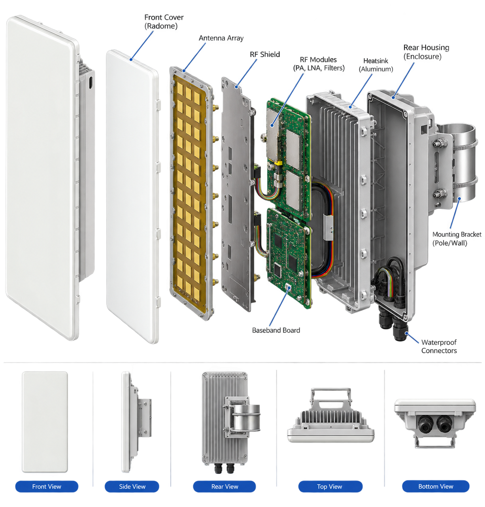
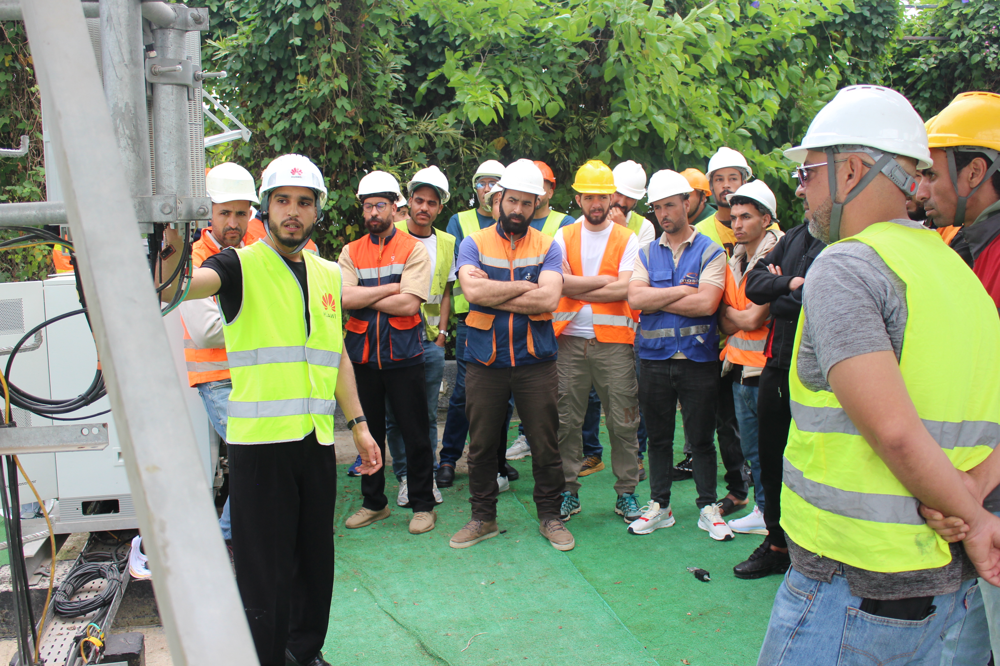

5G Networks
5G NetworksGuide
5G & 4G Network Fundamentals
Explore cellular network architecture, core concepts and practical mobile-network technologies.
Read & explorePractical engineering insights, field experience and accessible guides across 5G, RAN, fiber optics, quality assurance and more.
Showing all 18 resources
5G NetworksExplore cellular network architecture, core concepts and practical mobile-network technologies.
Read & explore RAN & Radio
RAN & RadioUnderstand radio access networks, radio equipment and the path from antennas to the core.
Read & explore
RAN & RadioLearn about beamforming, antenna arrays and 64T64R systems used in modern mobile networks.
Read & exploreFiber OpticsExplore optical transmission, fiber infrastructure and the fundamentals of high-capacity connections.
Read & exploreFiber OpticsCompare passive optical network standards and learn where each technology fits.
Read & explore Fiber Optics
Fiber OpticsDiscover how different fiber access architectures support network deployments.
Read & exploreSite EngineeringPractical guidance for installation quality, safe workflows and commissioning.
Read & explore
Site EngineeringField-oriented SBC commissioning, practical demonstrations and safe-site walkthroughs.
Read & exploreLearn about inspection reporting, quality assurance and operational checks.
Read & exploreEHS & QualityExplore environmental, health and safety principles for engineering teams.
Read & explore AI & Automation
AI & AutomationSee how intelligent operations, predictive analysis and automation affect telecom networks.
Read & exploreTools & PracticalExplore the interactive virtual site environment for practical engineering learning.
Read & exploreCore & TransportLearn essential IP core infrastructure and its role in service delivery.
Read & exploreCore & TransportUnderstand transport technologies that connect telecom sites and networks.
Read & explorePower & IoTExplore the power systems and energy considerations behind network infrastructure.
Read & explorePower & IoTDiscover connected devices and IoT applications within modern networks.
Read & exploreRAN & RadioExplore parabolic antennas and RF fundamentals through an interactive learning article.
Explore resourceTools & PracticalFollow data-center power from utility distribution to UPS, transformers and rack equipment.
Explore resourceNo matching resources found. Try another topic or search term.
Explore the virtual inspector, interview practice, or contact us about telecom engineering services.